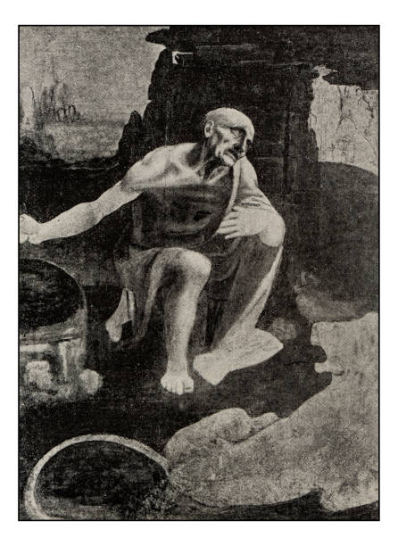
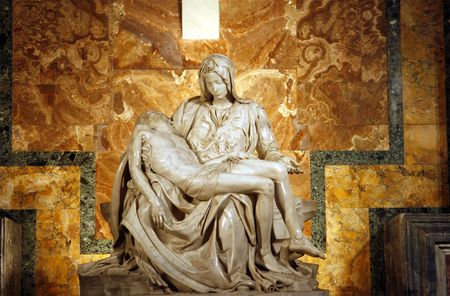
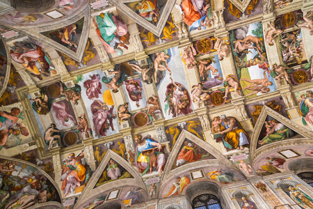
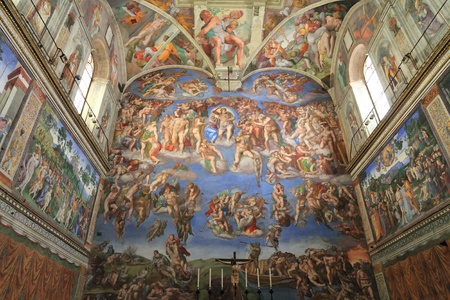
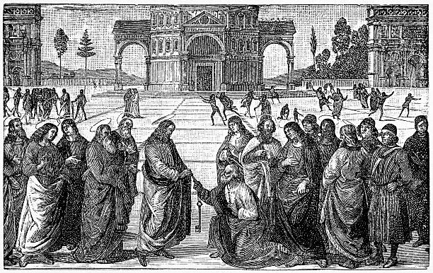

La cité du vatican
oeuvres
Voici certaine oeuvre du vatican :
Saint Jérôme de Léonard de Vinci, 1482 environ
Huile sur bois, cm 103 x 74

Raphaël, Fresque,440 × 770 cm, 1508-1512, musée du Vatican

La pieta de Michel Ange
1497-1499
Marbre de Carrare
174 × 195 × 69 cm

Voûte de la chapelle sixtine (le plafond) 1508–1512, 40 m x 14 m, Fresque

Jugement dernier chapelle sixtine ,1535–1541, Michel Ange ,14 m x 12 m,

Le Christ donnant les clés à saint Pierre,1482, Le Périgin, 335 × 550 cm, Fresque
